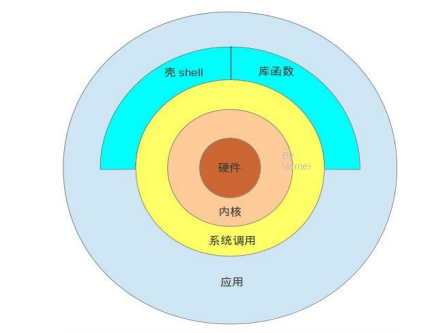

shell 特性
什么是shell:
- shell是一个用c语言编写的程序，是用户使用linux的桥梁， 它接收用户输入的命令并把它送入内核去执行
- shell即使一种命令语言，也是一种程序设计语言
- shell时linux的命令解释器（command interpreter）

shell环境
linux的shell种类众多，常见的有：
[imkindu@centos6 scripts]$ cat /etc/shells ＃查看当前系统所有的shell
/bin/sh #Bourne Shell
/bin/bash #Bourne Again Shell
/sbin/nologin #系统用户，不能登录
/bin/dash
/bin/tcsh
/bin/csh #C Shell
[imkindu@centos6 scripts]$ echo $SHELL #显示当前环境使用shell
/bin/bashBash是大多数Linux系统的默认shell。
[imkindu@centos6 scripts]$ ll /bin/sh
lrwxrwxrwx. 1 root root 4 Jul 14 10:38 /bin/sh -> bash #软链接 现在一般情况下，并不区分sh和bash,像#!/bin/sh可以写为#!/bin/bash
#! 申明用哪种解释器
命令执行
在用户输入命令后回车，会提请shell程序找到输入的命令所对应的可执行程序或者代码，并分析后提交给内核分配资源，将其运行起来
内部命令和外部命令
linux命令分为：内部命令 和 外部命令
内部命令：
内部命令实际上就是shell程序的一部分，通常在Linux系统加载时就被加载并驻留在内存中了，其执行速度比外部命令快，因为解析内部命令不需要创建子进程。如cd,echo,history
外部命令：
外部命令是Linux中实用程序部分，因程序的功能强大，包含的程序量也大，并不会随系统启动加载到内存中，只有在使用的时候才会被调用内存，通常放在/bin、/usr/bin、/usr/sbin...等目录中
区分内部命令外部命令 type
命令类型：
- alias 别名
- builtin 内置命令
- function 函数，shell函数
- file 文件，外部命令
- keyword 关键字
-
unfount 没有找到
[imkindu@centos6 scripts]$ type echo echo is a shell builtin #内部命令 [imkindu@centos6 scripts]$ type ls ls is aliased to `ls --color=auto' #别名 [imkindu@centos6 scripts]$ type passwd passwd is /usr/bin/passwd #外部命令
命令优先级
alias #别名 > builtin #内置命令 > hash #hash缓存 > path #外部命令
hash表
linux系统中有一个hash表，当执行外部命令或者别名是，系统会将这条命令的路劲和名称保存在这张表里，相当于缓存一样，下一次系统调用这条命令时，直接找到hash表里面的命令所对应的路径执行，不用再path路径下寻找了，大大提高了命令的调用效率
hash #显示hash缓存
hash -l #显示hash缓存
hash -p paht name #将命令全路径path起别名name
hash -t name #打印缓存中name的路径
hash -d name #清除name缓存
hash -r #清除所有缓存
[imkindu@centos6 scripts]$ hash -l
builtin hash -p /bin/readlink readlink
builtin hash -p /usr/bin/vim vim
builtin hash -p /bin/cat cat
builtin hash -p /bin/touch touch
builtin hash -p /bin/mv mv
builtin hash -p /bin/uname uname
builtin hash -p /bin/ln ln
builtin hash -p /usr/bin/whoami whoami
builtin hash -p /bin/env env
builtin hash -p /bin/ls ls